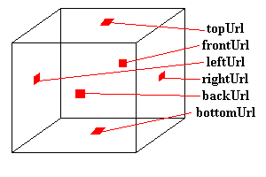

| Sobre las Colinas y más Allá... |
El fondo
Hasta ahora, los mundos que nosotros hemos creado lucen bastante bien, pero está faltando algo. Tienes un objeto que flota en el espacio, y eso es todo. Vale para algunas cosas, pero para que quede bien, necesitamos algún tipo de fondo. El fondo predefinido es negro, pero eso no es muy agradable. Hagamos algo sobre eso.
Hay dos maneras en que nosotros podemos cambiar el fondo de nuestra escena. Una es especificar el color para el fondo, y la otra es proporcionar imágenes a ser proyectadas en el fondo. Estas dos se llevan a cabo con el nodo Background. En primer lugar, yo describiré cómo agregar el color al fondo de tu escena.
El nodo Background tiene varios campos usados para el color del fondo. Éstos son:
Background {
MFFloat groundAngle []
MFColor groundColor []
MFFloat skyAngle []
MFColor skyColor [0 0 0]
}Sólo una nota rápida sobre el formato de las definiciones del nodo. Hasta ahora, he estado mostrándote los ejemplos de los nodos con el valor en su lugar, que es cómo lo usarías realmente. De aquí en adelante, sin embargo, yo te dare la definición real de los campos. Ésto es el nombre del campo, el tipo, y el valor predefinido. Sigues usando los nodos de la misma manera (como se muestra en el ejemplo un poco mas abajo). Pero te dare un poco mas de información. Si leíste el capítulo sobre las Aspectos Técnicos, comprenderás qué esta pasando.
Bien, ahora podemos continuar... Los valores predefinidos se muestran anteriormente. El valor por defecto es un solo skyColor de 0 0 0, negro. El skyColor es una lista de valores SFColor, correspondiendo a la secuencia de colores a ser desplegados en el fondo, desde el punto mas arriba, hacia abajo. Así que el primer valor se muestra arriba, y el próximo se despliega debajo suyo, y así sucesivamente. El skyAngle es el ángulo en que cada banda de color se va a mostrar. El primer color se despliega automáticamente a un ángulo de 0 (recto), así que no precisas incluir ese . Habrá siempre, por consiguiente, un ángulo menos que colores. El navegador interpola entre los colores en el fondo para que consigas un efecto mezclado suave. Por ejemplo, el código siguiente daría una mezcla entre rojo (recto arriba), verde (a 45 grados), y azul (recto delante).
Background {
skyColor [1 0 0, 0 1 0, 0 0 1]
skyAngle [0.78, 1.57]
}Esto aparecerá mostrado como en este ejemplo y código.
groundColor y groundAngle tienen el mismo efecto que arriba, pero un ángulo de 0 corresponde a la recta debajo, en lugar de la recta de arriba en el cielo. Para tener un solo color como fondo, simplemente especifica un solo skyColor y nada más. Para conseguir un horizonte afilado, necesitas usar groundColor y skyColor, dado que si sólo usas uno, interpolará suavemente entre los colores.
Los panoramas
Hay otra manera de proveer un fondo tu mundo. Ésto es proporcionar varios texturas a ser trazadas en un cubo alrededor del mundo. Este cubo siempre esta centrado en el espectador, entonces nunca podra acercarse a este cubo, sin importar cuan lejos se mueva. Esto se hace con otros seis campos en el nodo Background. Éstos especifican seis urls de imágenes a ser trazadas en el cubo, tal y como se muestra abajo.
Background {
MFString backUrl []
MFString bottomUrl []
MFString frontUrl []
MFString leftUrl []
MFString rightUrl []
MFString topUrl []
}
Si especificas imágenes con transparencia, el color de fondo especificado previamente en los campos descritos se mostrará a través suyo. Normalmente, si no tienes transparencias, no deberías especificar el color del fondo, ya que él el navegador bajará su rendimiento.
La niebla
¡Si quieres un efecto de niebla, VRML puede hacer eso también! ¡Sólo tienes que incluir un nodo Fog en el archivo, y a tirar millas! Los objetos en la distancia serán disimulados entonces por la niebla, y apareceran cuando te acerques a ellos. La sintaxis de un nodo de Fog es como sigue:
Fog {
SFColor color 1 1 1
SFString fogType "LINEAR"
SFFloat visibilityRange 0
}El campo color especifica el color, entonces puedes tener niebla, smog, humo, una llovizna roja o algo igualmente raro. El type es el tipo de niebla que gobierna cuan rapidamente los objetos se desvanecen en la niebla. Hay dos opciones aquí: "LINEAR" y "EXPONENTIAL." "LINEAR" da un desvanecimiento lineal en la niebla, y "EXPONENTIAL" da el ocultamiento más exponencial, dando una apariencia de niebla más natural. El último campo es visibilityRange. Más allá de esta distancia del espectador, nada es visible. Dentro de este rango, los objetos son disimulados parcialmente por la niebla. Un visibilityRange de 0 significa que la niebla no afecta nada, cualquiera sea su distancia.
El nodo Fog es útil para la optimización, así como para efectos de fantasía. Si tienes un nodo Fog y un nodo Background, el fondo no es es afectado por la niebla, así que se muestra a través normalmente. Esto podría dar efectos muy raros, entonces es mejor si haces el mismo color al fondo que a la niebla. ¡Todavía se muestra a través de, pero tu no puedes hacer distinción entre ellos!
Puedes ver los efectos de la niebla en este ejemplo, con el código.
En el Ocaso...
Ésto es todo para los fondos empañados en niebla. Puedes
echar un ojo a un mundo con un panorama de fondo pulsando el enlace de
abajo:
Tutorial Mundo 8 y código.
En el próximo capítulo, voy a mostrarte cómo puedes agregar sonido y música a tus mundos.